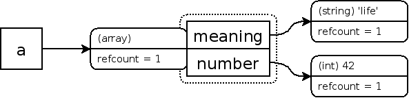
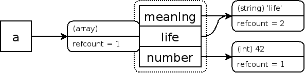
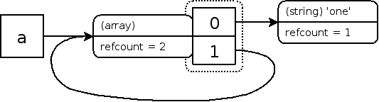
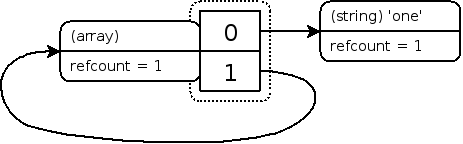

PHP 变量存储在称为“zval”的容器中。zval 容器除了变量的类型和值之外，还包含两个额外的信息位。第一个是“is_ref”，是布尔值，表示变量是否是“引用集合”的一部分。通过这个位，PHP 引擎知道如何区分普通变量和引用。由于 PHP 允许用户自定义引用，通过 & 运算符创建引用，zval 容器还有内部引用计数机制来优化内存使用。第二个是“refcount”，表示有多少个变量名（也称为符号）指向这个 zval 容器。所有符号都存储在一个符号表中，每个作用域都有一个符号表。主脚本（即通过浏览器请求的脚本）有一个作用域，每个函数或方法也有一个作用域。
当使用常量值创建新变量时，也会创建 zval 容器，例如
示例 #1 创建新 zval 容器
<?php
$a = "new string";
?>
在这种情况下，新的符号名称 a 会在当前作用域中创建，并且会创建新的变量容器，其类型为 string，值为
new string。由于没有创建用户定义的引用，“is_ref”位默认设置为 false。“refcount”设置为
1，因为只有一个符号使用了这个变量容器。请注意，具有“refcount”为 1 的引用（即"is_ref"为
true）会视为非引用（即“is_ref”为 false）。如果安装了 » Xdebug，可以通过调用 xdebug_debug_zval() 来显示此信息。
示例 #2 显示 zval 信息
<?php
$a = "new string";
xdebug_debug_zval('a');
?>以上示例会输出：
a: (refcount=1, is_ref=0)='new string'
将这个变量赋值给另一变量名将增加 refcount 的计数。
示例 #3 增加 zval 的 refcount
<?php
$a = "new string";
$b = $a;
xdebug_debug_zval( 'a' );
?>以上示例会输出：
a: (refcount=2, is_ref=0)='new string'
这里的 refcount 是 2，因为同一个变量容器链接到 a 和 b。PHP
很聪明，当没有必要的时候，不会复制实际的变量容器。当“refcount”到 0 时，就会销毁变量容器。当链接到变量容器的任何符号离开作用域（例如函数结束时）或取消符号赋值（例如通过调用
unset()）时，“refcount”会减少 1。以下是示例：
示例 #4 减少 zval refcount
<?php
$a = "new string";
$c = $b = $a;
xdebug_debug_zval( 'a' );
$b = 42;
xdebug_debug_zval( 'a' );
unset( $c );
xdebug_debug_zval( 'a' );
?>以上示例会输出：
a: (refcount=3, is_ref=0)='new string' a: (refcount=2, is_ref=0)='new string' a: (refcount=1, is_ref=0)='new string'
如果现在调用 unset($a);，变量容器，包含类型和值，会从内存中移除。
对于 array 和 object 这样的复合类型，情况会稍微复杂一些。与 scalar 值不同，array 和 object 的属性存储在自己的符号表中。这意味着以下示例将创建三个 zval 容器：
示例 #5 创建 array zval
<?php
$a = array( 'meaning' => 'life', 'number' => 42 );
xdebug_debug_zval( 'a' );
?>以上示例的输出类似于：
a: (refcount=1, is_ref=0)=array ( 'meaning' => (refcount=1, is_ref=0)='life', 'number' => (refcount=1, is_ref=0)=42 )
图示：

这三个 zval 变量容器是 a、meaning 和 number。增加和减少“refcounts”的规则也适用于此。下面，再向数组添加一个元素，并将其值设置为已存在元素的内容：
示例 #6 添加已存在的元素到数组
<?php
$a = array( 'meaning' => 'life', 'number' => 42 );
$a['life'] = $a['meaning'];
xdebug_debug_zval( 'a' );
?>以上示例的输出类似于：
a: (refcount=1, is_ref=0)=array ( 'meaning' => (refcount=2, is_ref=0)='life', 'number' => (refcount=1, is_ref=0)=42, 'life' => (refcount=2, is_ref=0)='life' )
图示：

从上面的 Xdebug 输出中，可以看到新旧的数组元素现在都指向“refcount”为 2 的 zval 容器。尽管 Xdebug
的输出显示了两个值为 'life' 的 zval 容器，但它们实际上是同一个。xdebug_debug_zval()
函数没有显示这一点，但可以通过显示内存指针来看到它。
从数组中删除元素就像从作用域中删除符号一样。删除后，数组元素指向的容器的“refcount”会减少。同样，当“refcount”到 0 时，变量容器就会从内存中删除。再举个例子来说明这一点：
示例 #7 从数组中删除元素
<?php
$a = array( 'meaning' => 'life', 'number' => 42 );
$a['life'] = $a['meaning'];
unset( $a['meaning'], $a['number'] );
xdebug_debug_zval( 'a' );
?>以上示例的输出类似于：
a: (refcount=1, is_ref=0)=array ( 'life' => (refcount=1, is_ref=0)='life' )
现在，如果将数组本身作为数组的一个元素添加进去，情况就会变得有趣起来。在下一个例子中这样做，并且偷偷加入引用运算符，否则 PHP 会创建副本：
示例 #8 将数组添加为自身的一个元素
<?php
$a = array( 'one' );
$a[] =& $a;
xdebug_debug_zval( 'a' );
?>以上示例的输出类似于：
a: (refcount=2, is_ref=1)=array ( 0 => (refcount=1, is_ref=0)='one', 1 => (refcount=2, is_ref=1)=... )
图示：

可以看到数组变量（a）以及第二个元素（1）现在都指向“refcount”为 2
的变量容器。上面显示的“...”表示存在递归，这在这种情况下意味着“...”指向原数组。
就像之前一样，清除变量会删除符号，并且指向的变量容器的引用计数会减少 1。因此，如果在运行上述代码后清除变量 $a，那么 $a 和元素“1”所指向的变量容器的引用计数会减少 1，从“2”变为“1”。可以表示为：
示例 #9 清除 $a
(refcount=1, is_ref=1)=array ( 0 => (refcount=1, is_ref=0)='one', 1 => (refcount=1, is_ref=1)=... )
图示：

虽然在任何作用域中都没有指向这个结构的符号，却无法清理它，因为数组元素“1”仍然指向同一个数组。由于没有外部符号指向它，用户无法清理该结构；因此会出现内存泄漏。幸运的是，PHP 会在请求结束时清理这个数据结构，但在此之前，它会占用宝贵的内存空间。如果你正在实现解析算法或其他需要子级元素指向"父级"元素的情况，会经常发生。当然，object 也可能出现相同的情况，因为 object 始终隐式“引用”。
如果这种情况只发生一两次，可能不是问题，但如果出现数千次，甚至数百万次的内存损失，显然就成了问题。这在长时间运行的脚本中尤为棘手，比如守护进程，其中请求基本上永远不会结束，或者在大量的单元测试集中。后者在运行 eZ Components 库的模板组件的单元测试时出现了问题。在某些情况下，它需要超过 2GB 的内存，而测试服务器并没有那么多内存可用。